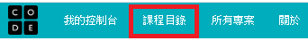

- 點擊CodeOrg網址:https://studio.code.org/sections/JLYJEC
- 得到如下的登錄畫面
- 選擇學生帳號:Murphy, 通關密語:region spot登錄畫面,如下
- 點擊登入按鈕,進入下一個畫面,檢查右上角是否有Murphy登入字樣
- 選擇課程 2,有兩種方式
- 從左上角課程目錄找到課程2再點進去,詳細的步驟請自行發掘
- 直接點擊課程2網址:https://studio.code.org/s/course2
- 最後,進入課程2網址,Happy coding adventure!!!